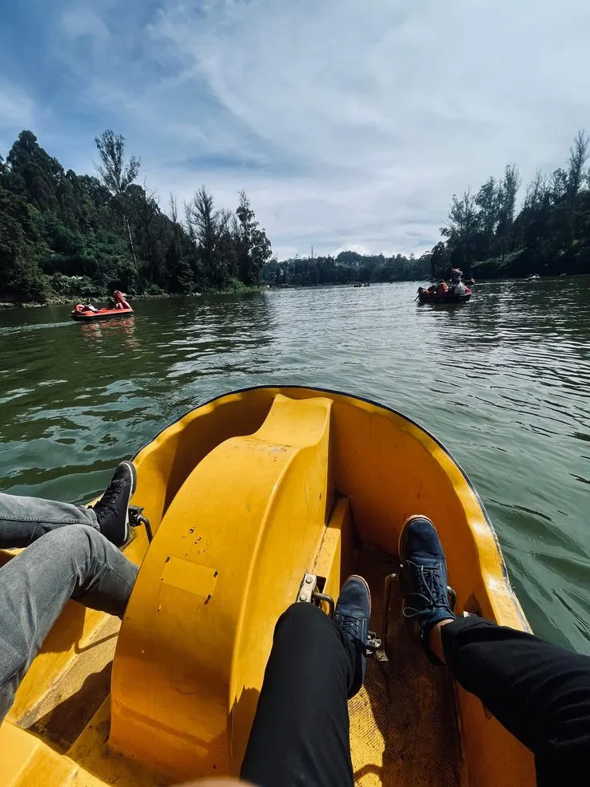
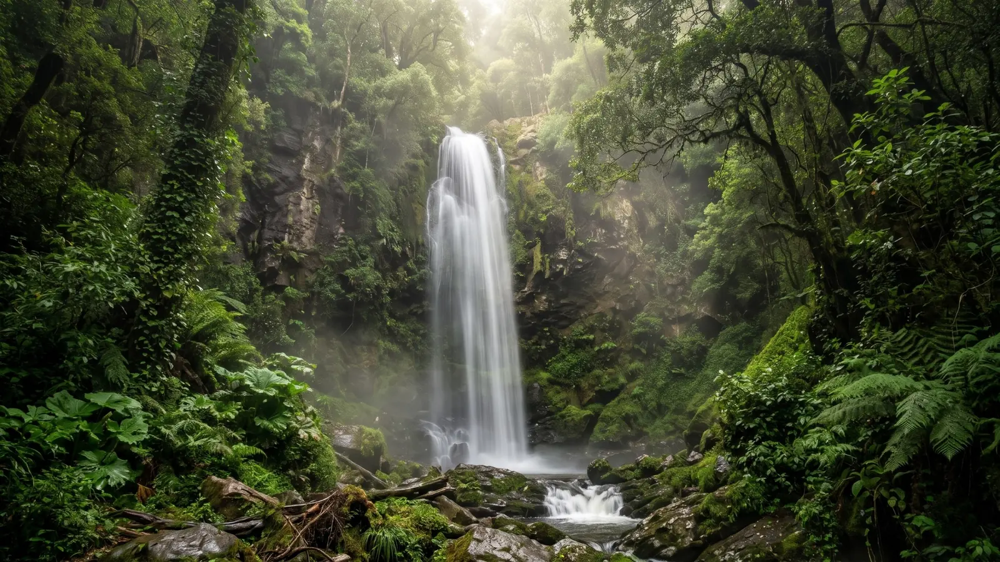
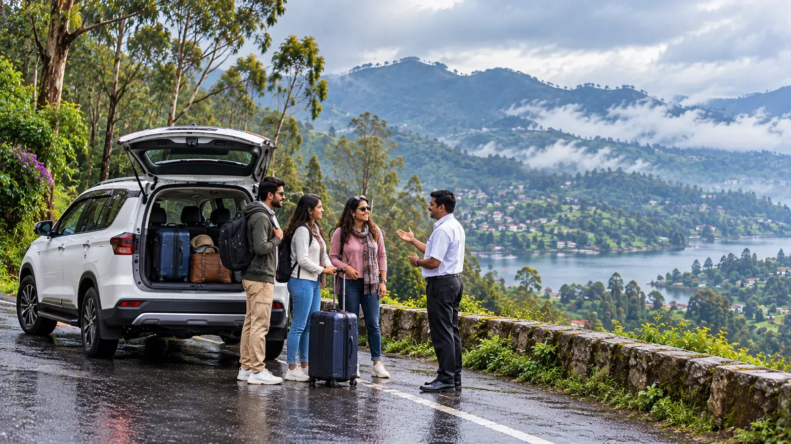
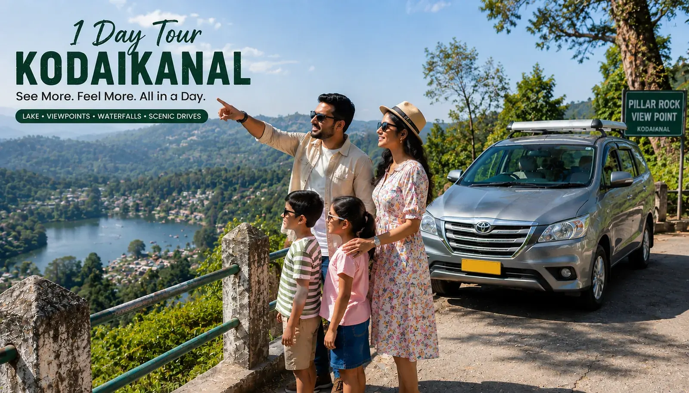

Tours · Stays · Transport
Travels in Kodaikanal: Your Hills, Planned
Cottages Kodaikanal plans Kodaikanal travels end to end: tours, stays, local transport and ready packages, run by a family hosting guests here for 12 years.
Three choices, one quote
Kodaikanal Trip Planner: Build Your Trip
Planning a hill-station break usually means juggling three separate bookings. Pick where you start, how you ride and where you stay, and our desk will route and price the whole plan for your dates in a single WhatsApp reply, so nothing is left for you to chase. Change any pick later and the summary updates instantly.
1Start from
2Ride in
3Stay at
Overview
Kodaikanal Holidays at a Glance
High in the Palani Hills of Tamil Nadu, Kodaikanal is wrapped in pine and shola forest, with a spring-fed lake at its centre and a climate that stays cool through the year. Visitors come for misty viewpoints, waterfalls and slow mornings, then find the real task is deciding where to stay, how to get around and which sights deserve the drive. Kodaikanal tourism rewards a little planning, and a good plan saves you a full day of guesswork. The lake, the viewpoints and the waterfalls sit several kilometres apart on narrow hill roads, so the order you visit them in decides how much of the day you actually enjoy.
Our family-run desk handles all three. We host the stays ourselves, run the cabs and jeeps, and plan the sightseeing routes, so couples, families and friends get one clear plan and one person to call. That is what a travel agency in Kodaikanal should do: know the roads, the weather and the crowds. Every enquiry is answered by our own team, which is why the plan you receive reflects the season, the road conditions and the people travelling with you.
Signature routes
Kodai Tours: Six Signature Routes
Every route below has its own page with the full itinerary, stops and pricing. Pick the Kodaikanal tour that matches your pace, whether that means slow lakeside hours, a short waterfall trek or a forest drive most visitors never see. Each route is driven by a local who knows the timings.

Valley Tour
Terraced slopes and sweeping viewpoints over the Vattakanal valley, with time for photographs at every unhurried stop and a slow and scenic ridge drive back.
View tour →
Village Tour
Small hillside villages and everyday local life, far away from the main sightseeing circuit and weekend crowds, with quiet lanes to walk and gardens to see.
View tour →
Picnic Tour
A relaxed day beside the lake with pedal boating, lakeside food stalls and enough free time to simply sit, snack and watch the mist roll in across the water.
View tour →
Berijam Lake Tour
A permit-only forest drive to Berijam, Kodaikanal's quieter reservoir lake, through shola woodland far from the busy town centre, its traffic and its noise.
View tour →
Park Tour
Bryant Park's botanical gardens and glasshouse, an easy in-town stop that suits families, older guests and short winter afternoons, with very little walking.
View tour →
Adventure Tour
Pepper Falls: a scenic drive and a short guided trek to a hidden waterfall, best for guests who enjoy stretching their legs and a little mud on their boots.
View tour →Trip essentials
Kodai Tours and Travels: Everything in One Place
-
Where to Stay
From private villas and family cottages to budget dormitories, we host every kind of stay ourselves. You deal with the people who own the rooms, not a listings site that forwards your request to strangers.
-

Getting Here & Around
Local taxis, car rental and jeep safaris cover Kodaikanal itself, while outstation pickup and drop run from five gateway cities, in a sedan, SUV, jeep or larger coach, with driver, fuel and tolls included.
-

Guided Sightseeing
A local driver-guide takes you through the major landmarks in one loop, timed to beat the midday crowds and the afternoon fog. A larger party can also ride a Kodaikanal sightseeing bus on the same route.
Kodaikanal LakeCoaker's WalkPillar RocksSilver Cascade Falls -

Activities
Beyond sightseeing, Kodaikanal is built for slower outdoor time, so a Kodai trip can mix easy trails, lakeside cycling and boating without rushed transfers. Each activity easily slots around your tour day.
- Trekking on marked forest trails
- Cycling around the lake road
- Boating: pedal, rowing & nature boats on Kodaikanal Lake
-

Local Finds
The lake-road market strip is where the local flavour lives: handwoven woolens, eucalyptus oil, homemade chocolate and artisan handicrafts from small shopfronts near the lake, an easy extra stop on any tour.
Plan a market stop
All roads lead up
Kodaikanal Road Trip: Where Can We Pick You Up?
Outstation pickup and drop run from all five gateway cities, so your journey can begin at a railway station, an airport or a temple town. Tap a city to see its full fare sheet, distance and route before you decide. Prices are shown up front, so you can compare routes calmly.
Starting one-way fares for a sedan, with driver, fuel and tolls included on every route. Thinking of adding Ooty? Ask us on WhatsApp and we will price a combined Kodaikanal Ooty trip for your dates. Longer routes simply need a little more notice.
Packages
Kodaikanal Tour Planner: Ready-Made Packages
Every package bundles stay, private cab and sightseeing into one WhatsApp quote, with personalised routing and no hidden add-ons. Whether your Kodaikanal family trip lasts a day or a long weekend, the plan is priced for your group. Dates, room counts and vehicle size all feed into the final figure.

Kodaikanal 1 Day Tour
Lake, Coaker's Walk and Pillar Rocks in one guided loop that fits easily inside a single day, with time left over for tea and an evening stroll.
View package →
Kodaikanal 2 Day Tour
An unhurried itinerary with a second sightseeing day, so your mornings stay slow, viewpoints stay uncrowded and nobody is hurried back to the car.
View package →
Kodaikanal 3 Day Tour
The full hill-station circuit across three days, covering lakes, falls, forests and viewpoints, with one rest evening in the middle of the plan.
View package →
Kodaikanal Group Tour
Multi-room stays and shared transport for reunions, offsites and college trips, billed as one clear group quote that everyone can read and split.
View package →Looking for honeymoon, family or sightseeing themes? See all tour packages, or send your dates and we will build a plan around them. Any package can be stretched by a day or trimmed by one.
Get a quote
Kodaikanal Trip Cost: Three Steps to Your Quote
Stay only, transport only, or both bundled into one package. Price depends on dates, group size and vehicle, so we quote each plan individually instead of publishing one number that fits nobody. Share your dates and headcount, and the figure comes back itemised.
- Pick your tripChoose a 1, 2 or 3 day tour, a group package or a fully custom plan built around your own list of places and your own pace.
- Choose pickup, ride & staySelect any one of five cities, a Kodaikanal travels car or a 20-seater tourist bus, and a hotel, resort, villa or dormitory.
- Get your quote on WhatsAppYour details open as a ready-made message, and our family-run desk replies the same day with a clear, itemised price quote.
Guest reviews
Best Travels in Kodaikanal: What Our Guests Say
Our cabs and jeeps are run by the same family that hosts these guests. Here is what travellers told us after their stay, in their own words.
We booked a family cottage for five of us and it never felt cramped. Staff arranged everything from bonfire wood to breakfast timing.
Traveled from Bengaluru for a college reunion — the group stay cottage fit all ten of us with room to spare.
Our honeymoon stay had exactly the privacy we wanted — hills outside the window, a fireplace for the cold evenings.
Find us
Kodaikanal Tour and Travels: Where Are We Located?
Cottages Kodaikanal, Near Zion School Junction, MM Street, Lawsghat Road, Kodaikanal - 624101.
Open in Google Maps · Call +91 75023 45777
Where Can You Start Your Trip From?
FAQs
Common Questions About Travels in Kodaikanal
Yes. Every Kodaikanal tour quote is routed and priced for your dates, group size and pace on WhatsApp. You can start from one of our packages and swap stops, add a stay night or drop a sightseeing day.
Yes. Outstation pickup and drop run from all five cities, with driver, fuel and tolls included in the fare. As tour operators in Kodaikanal, we confirm your pickup time and point before travel day.
Your Kodaikanal trip cost depends on dates, group size, vehicle and stay type. Sedan pickups start from ₹2,500 one way, and every package quote is itemised on WhatsApp before you commit, with no hidden add-ons.
Either. Book stay only, transport only, or bundle both into one quote. As a travel agency in Kodaikanal that hosts its own stays and runs its own cabs, we keep both on one bill and one WhatsApp thread.
Yes. Cottages Kodaikanal bundles multi-room stays with shared transport for reunions, offsites and college trips, and our Kodaikanal trip planner returns one clear quote for the whole party the same day on WhatsApp.
Ready When You Are
Same-day WhatsApp replies, a local team that knows every route, and no third-party markup: that is how tours and travels in Kodaikanal should feel. Tell us your dates and we will take it from there.